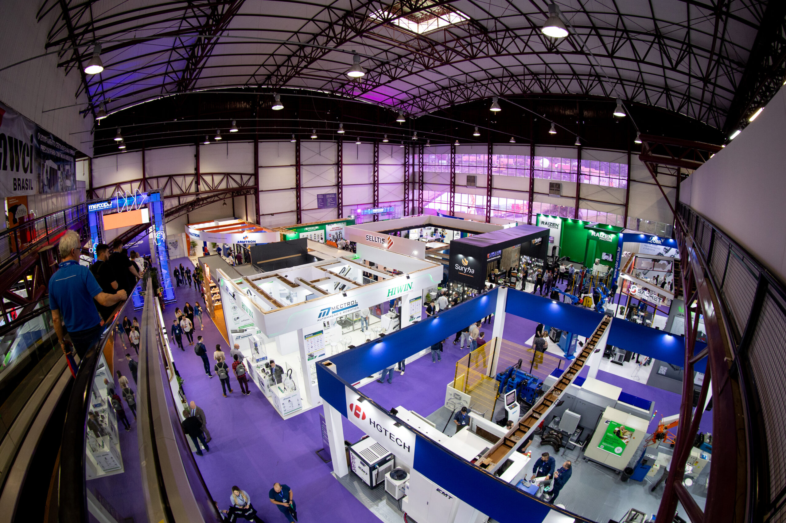
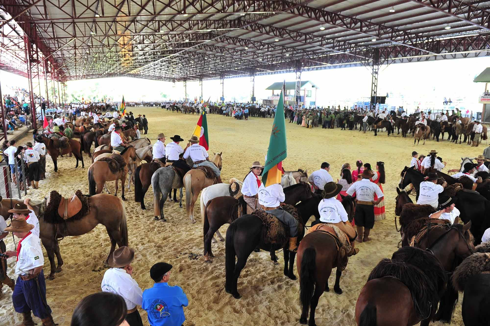
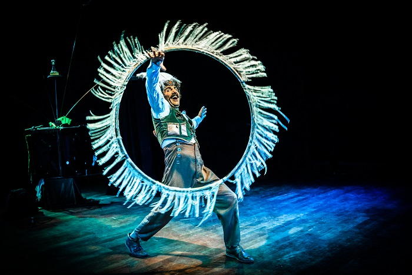

Fevereiro / Março
Festa da Uva
Principal evento da cidade, celebra a imigração italiana e a produção de uvas da região.
Caxias do Sul possui um calendário repleto de atrações que celebram sua história, cultura e diversidade. Durante todo o ano, moradores e turistas podem participar de eventos que valorizam as tradições da Serra Gaúcha.
Principal evento da cidade, celebra a imigração italiana e a produção de uvas da região.

A Mercopar é a maior feira de inovação industrial da América Latina, realizada anualmente pelo Sebrae-RS em parceria com a FIERGS

Celebração da cultura gaúcha com apresentações, gastronomia e atividades tradicionalistas.

O principal evento de artes cênicas da região, realizado anualmente pela Secretaria Municipal da Cultura.